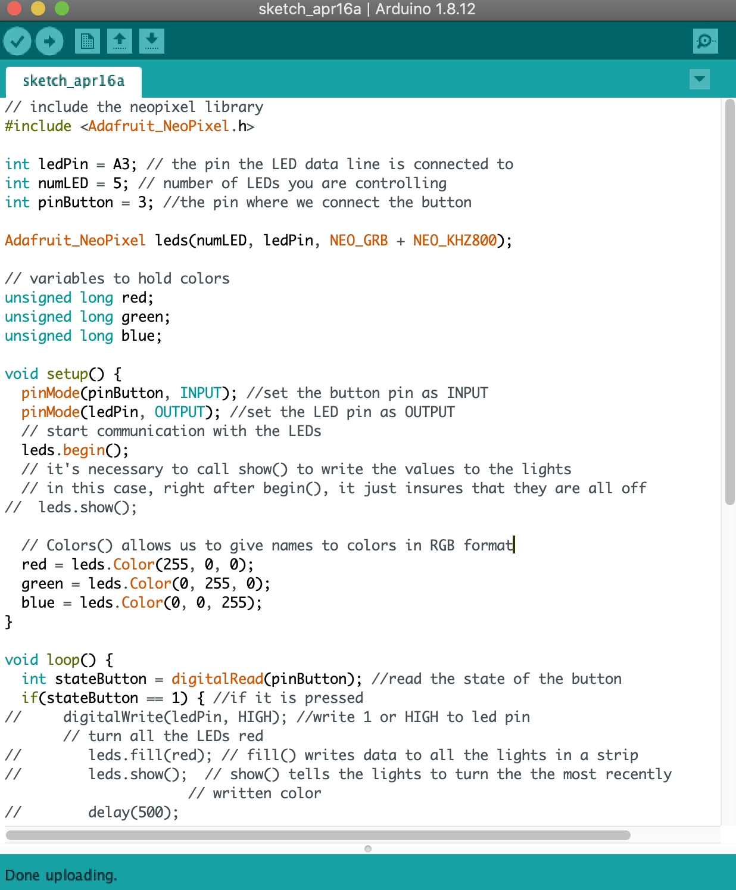
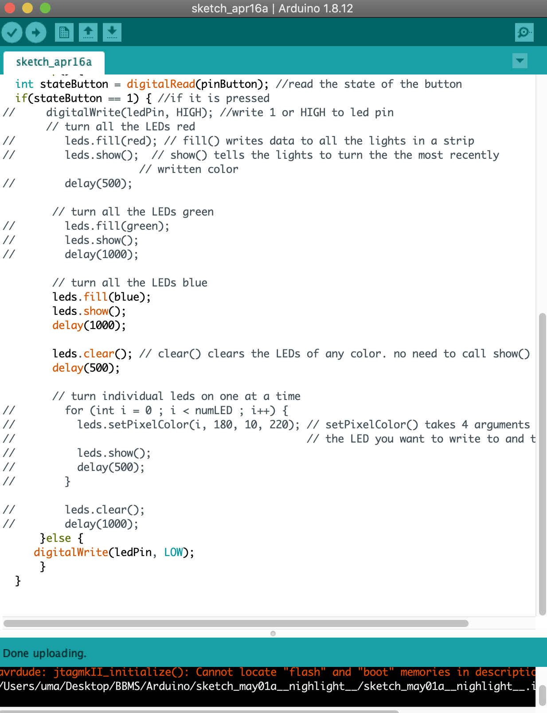
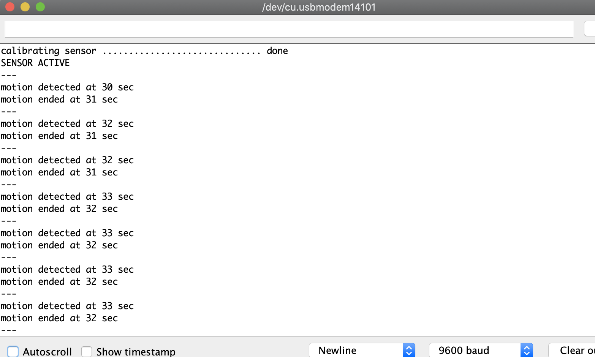
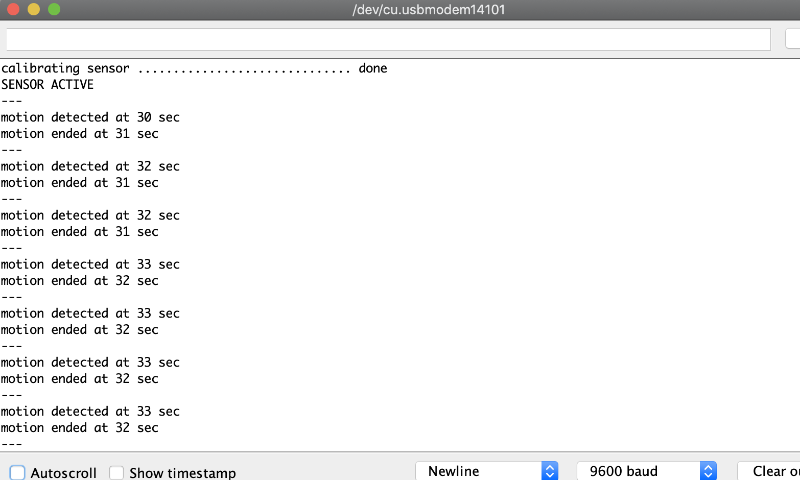

Week 1 Reading
Crawford defines interactivity as “a cyclic process in which two actors alternately listen, think, and speak. The quality of interaction depends on the quality of each of the subtasks (listening, thinking, and speaking).” Further, I certainly agree with his claim that we underappreciate the value of interaction, especially when it comes to advancing our technologies and new innovations. I think interactivity is a medium through which we can, through the use of our senses, truly experience life. Without any sort of interactivity, insight or judgment is lost.
After reading Bret Victor’s perspective of Microsoft’s “Vision of the Future” video, I realize that he’s not incorrect about the word “vision” and its importance in this context. “Visions give people a direction and inspire people to act, and a group of inspired people is the most powerful force in the world”.
He provides an argument and supports his thoughts extremely well; however, it was lacking a rational solution. He tells us where to focus our attention on for the future of interactivity, nevertheless. He claims that a “great” tool fits both the problem at hand the human capability to fix it.
It is important thus to understand human capabilities. To know what we are capable of by using our senses. For example the use of our hands (touch) - we are able to feel our way and manipulate our way to doing almost about anything. “Pictures Under Glass” is a phrase that the author suggests “sacrifices all the tactile richness of working with our hands”. I think this is important to keep in mind while discussing the future of interaction.
Another strong argument made is that the future is people-driven. “The most important thing to realize... is that it's a choice. People choose which visions to pursue, people choose which research gets funded, people choose how they will spend their careers.” Relying simply on the “status quo” of the digital world is completely pointless without mass user-testing and constant debating on the subject. Even Crawford points on the popularity of something which takes away the true meaning of whatever it is.
As for the responses to that article, I was glad to see the debates made and thoughtful opinions on the matter. According to Crawford’s definition of interactivity, I can confidently suggest that it takes more than just one sense to interact with a certain technology - not one sense (such as hands/touch/sight) can do interaction justice.
Week 2 Reading
“We talk about how fast it is changing, but we talk much less about the ways in which it is not.” I completely agree with Dourish’s remark here. He explains the difference between social and tangible computing in embodied interactions. Tangible computing includes an augmented world where active entities respond to people’s environment and activities — it’s to get the “computer out of the way” and allow people with a tangible interaction experience. With social interaction, Dourish mentions the importance of the “dialogue” between user and computer. Tangible and social computing go hand in hand - they are based on the same underlying principles of interaction and our abilities to experience the everyday world.
Social and tangible computing - one requires interaction in the form of context and the other that doesn’t necessarily rely so much on context. From what I understand, tangible or physical computing focuses on interaction that uses our senses - touch, smell, etc. in a world of physical reality. Social computing relies more on a cognitive understanding and emotional aspect - one that requires context for the interaction to make sense to us. Dourish claims that they work together and I agree. I see how in computing and designing, working on a balance between the two forms for total embodied interaction is a must.
Furthermore, Dourish mentions that HCI studies the iteraction of human with different forms of computing - not just the desktop, but computing devices such as microwaves, ovens, cars, etc. I think our focus as designers and engineers should be to question the ways that computers are not efficient enough and must be made more so. Interactional approaches to computing - instead of procedural - “emphasize diversity and specialization rather than unity and generality.”
Week 3 Reading
Norman’s three elements of design:
I believe that the three elements truly work together. As Norman states: they are “interwoven though any design… they interweave both emotions and cognition.” They play together to allow us to notice the effectiveness and understand the significance of the product. The only way it is possible to understand cognitively is to allow an emotional imprint within us. “Our emotions change the way we think, and serve as constant guides to appropriate behavior, steering us away from the bad, guiding us toward the good”. While I don’t believe that’s the only thing that guides us toward the good, I certainly believe it has a large impact and should be given more thought. Visceral, behavioral, and reflective elements in design could perhaps create an entire, and complete, understanding (emotionally and cognitively) of our product - that can allow us to experience the everyday world with a total, embodied interaction.
I think it’s good to have concrete distinctions in design such as these. Nevertheless, I find a lack of an objective perspective in design from Norman’s chapter. Granted, these elements exist mostly in all tangible products - but a lot is lacking in the usefulness of digital products. And this does not, in any way, provide good interaction with those products. I have read Don Norman’s book “The Design of Everyday Things”. And from it, I learned the significance of minimalism and the importance of “usefulness” especially in designing and computing. If it is not of some use, there is no point for it to exist. However, Norman also talks about artwork. Which design you choose (whether for efficiency or simple artwork) depends on the occasion, the context, and the mood.
Week 4 Reading
Tigoe, through his article, Physical Computing’s Greatest Hits (and misses), shows how important it is to remain open-minded. It’s difficult, but crucial to not shut down ideas because they’ve been done before. Especially I believe, as students, this is our opportunity to make mistakes and learn from the works of other people. It’s extremely hard to do because everyone wants to be special - to create something new, and if it’s not new, there doesn’t seem to be a point to re-tending to it. However, I think it’s very important to see what’s out there and try to work with variations of it or even try to recreate it. I liked the Scooby-Doo paintings because it emphasizes the point of paying attention vs. simply being present and looking at something. I thought it was genius how Ramona Pringle and Charles Amis’ Curious Window presents this idea.
Kenneth P. Fishkin mentions that Tangible User Interfaces, or “TUIs, have been largely an ‘I know one when I see one’ field—can we move beyond this?” That’s a good question to ponder on because it’s truly a difficult balance to find within technology and tangibility (“using hands to manipulate some physical object(s) via physical gestures”). How can “a computer system detect this, alters its state, and gives feedback accordingly”? Fishkin in “A taxonomy for and analysis of tangible interfaces” breaks down and analyses this topic very well; there is great detail and specificity in his explanation of TUIs and how significant it is in the world of design and innovation.
Week 6 2020 Open Hardware Summit!
On Friday, March 13th, I watched the events at 2020’s Open Hardware Summit. At 4 pm, Patricia Alves Oliveira spoke about YOLO - A Social Robot for Creativity. She described that this project’s intention is to stimulate creativity in children - who can play with it on the floor and have a very clean interaction that stimulates creativity during play. YOLO, which stands for Your Own Living Object, is a social robot for children to interact with. The robot is touch reactive so that children have full control of the object. It can used as a character for stories that children create. It has two techniques - a contrast technique which promotes divergent thinking, and a mirror technique which encourages convergent thinking. It also a motion detector built-in which can help determine play patterns in the storytelling process. Why build it? Ms. Oliveira explains that she had always wanted to help with the creative industry today. This industry needs to be encouraged in order to increase creativity during play for a child. Storytelling is one of the ways children interact with their world, and proper, stimulating interactions that promote creativity in that child is crucial. In the past, and still a little today, there is a standardized way of teaching - children are forced to memorize which stunts their creativity. Today, however, the industry promotes more innovation and problem solving, which is good.
With this project, Ms. Oliveira describes the three things she’d learned: It’s not easy if you’re not an engineer to create something like this; it takes time; it should be an act of altruism while building something like this, and, lastly, proper recycling of this robot was extremely crucial to her as well. In this two-year-long project, the design principles include the following:
I. Low floor, wide-walls - it doesn’t provide a huge learning curve for any story.
II. Creativity Provocations - which promotes convergent thinking for the child.
III. Open-Ended Playfulness - through this, the child can end the story anytime.
IV. Disappointment-Avoidance through Abstraction - this avoids distractions for the child; it includes just sensing abilities.
The robot includes batteries inside; however, this design didn’t allow the neck of it to go up and down as they had originally wanted it to. It has a circular base that contains a mouse sensor to study patterns. It interacts through different lights in fibers at the head of the robot. The movement is based on different shapes and velocities. It has a touch sensor as well which was included through the use of copper tape. YOLO uses raspberry pie which runs python; it contains glowing fibers and a battery. It’s completely child-proof (I’d sure hope so). Ms. Oliveira lastly discusses how important it was for her to have a delivery to a community in open-access format - she used a scientific journal that discusses the process of creation from a rising action, to the climax, and then the falling action. After a lot of testing, the stories that children came up with using YOLO were more original when it was on than when it was off - it’s meant to be a social robot for better interaction and a creativity stimulator for children.
I then observed the next event, LILACC, which was supposed to start at 4:30 but instead started around 5 pm since everything took extra time. Nevertheless, in this event, Christopher Neidi, Matthew Parker, and Kristin Ellis discussed what it was about - the World’s first open sources hardware for Direct Air Carbon Capture (DACC) machine. They’ve worked together to create a miniature DACC called VIOLET using the designs of Professor Tao Wang who they stated was the “godfather of carbon capture”. Why create such a device? Other than it simply being a good thing to do, Mr. Neidi discusses their reasoning. Stopping future emissions isn’t enough anymore - once the world reaches the 2-degree temperature mark, it will be disastrous. Negative emissions has to happen at this point. By mid-century, 10 gigatons of carbon must be taken away every year. Even that isn’t enough as it will continuously become harder - there will be competition for food production, it’ll get harder to measure and verify the CO2 levels. This project will help close the gap for people to do something about it.
Through DACC, CO2 removal rate is up to 1000 times more efficient than planting trees. The CDR upper limit is 40 gigatons a year which is more than what is ideal. It’ll be easy to digitally verify and measure how much CO2 is in the air and what’s happening. DACC can be placed anywhere; this process can take place anywhere. But to remove CO2, it must be put somewhere else. So this process uses geological storage to compensate for that - it’ll pump it geologically and mineralize it. CO2 can help agriculture - it can help neutralize greenhouse sectors. It can be used as fuel (A2F). It can be added to other materials - concrete, plastics, and all this while DACC is scaled up more.
There is already real-world deployment of this process - ClimeWorkds (in Switzerland), Carbon Engineering (in Canada), and Global Thermostat (USA), are all startups with pilot deployments taking place. The challenges of DACC include the following:
I. It’s performance - it can more efficiently draw down CO2
II. Its cost should be decreased
III. It’s a challenge to keep it’s energy level down for a better net negative impact.
VIOLET uses the power of open source to apply these challenges. Mr. Neidi then mentioned a quote by Eric. S. Raymond: “Given enough eyeballs, all bugs are shallow”. Using this quote, he discusses the theory of change:


What more can be imagined with DACC? We should get more creative with it, he mentions. This process uses “Moisture Swing” which triggers the capture and release of CO2 in a different way. There are other methods of creative carbon capture as well such as Temperature Swing and Pressure Swing. However, this is based on humidity; so when it’s dry, it’ll absorb CO2 and when it’s wet, it’ll absorb. DACC uses open-source for safe accessibility; simple, passive, and low energy; miniaturization and modularization. Ms. Ellis then talks about the Violet prototype which is based on Professor Wang’s prototypes. He is the leading global DACC moisture swing researcher, a Professor at Zhejiang University State Key Lab of Clean Energy Utilization.
Ms. Ellis then talks about the three components of DACC:
I. The Capture Unit (which captures and releases): From what I understood, it contains four sorbert blocks on motorized tracks. Sorbent blocks are made of fine power. They are used in submarines and have membranes to increased surface area and airflow - they allow “crosslinking”. Essentially, sorbent blocks are the moving part - it expands and collapses into the water tank to release the CO2. The water in the tank has greater binding affinity which allows for desorption as well. This goes into the Gas Transfer Tube which has 5% CO2 gas concentration; the Gas Analyzer is the software combined with Arduino (which is when it gets interesting). Designed by Professor Tao, it uses an SCD30 sensor and reads out the humidity and temperature and parts per CO2.
II. The Greenhouse (which collects and measures CO2): plants grow and pump out CO2. There is an increase in crop yield of up to 20% with the use of DACCs according to Ms. Ellis.
III. Measurement (from inside the Greenhouse using the Software)
How does this solve the problem? Ms. Ellis states that it reduces absorption time and increases capture kinetics. It increases CO2 concentration of output gas. And lastly, it uses dehumidification. Ultimately, Mr. Parker discussed the community that they’ve built to empower people to fight climate change. They invite marines and 3D modelers and engineers to help with this project. They are located at NYU ITP where they test sorbent and work together to design or brainstorm new ideas. DACC is planned to be functional in a month!
Watching these events brought to light all the cool things going on and how I could potentially contribute as well. This semester, a couple of other Tandonites and I have been trying to create a VIP for the climate crisis at Tandon. We have been working with Professors and other organizations to work on a semester-long project with other Tandon students in order to help with the climate crisis. So when I saw that there was an event for carbon capture devices at the 2020 Hardware Summit, it immediately caught my interest. Now, I will be reaching out to Mr. Parker and to NYU ITP LILACC in order to help us out and perhaps get more input. This exercise was very interesting and I’m glad I watched!
Final Project
I wanted to create a night light using a PIR sensor. I certainly learned a lot about PIR sensors. I seemed to have purchased only half of what the product should have been - I ordered the Z-motion PIR sensor dual element. It came without the lense (transparent dome on top of the sensor), which I disovered can change the breadth, range, and sensing pattern very easily. I was unable to order that as it was too late. So I tried to make do with what I had (still waiting for my LED strips to arrive).
I decided to first create a basic circuit using an LED and a switch. Then, I decided to use the neopixel LED strip that I worked with previously (since my LED strips hadn't arrived). I tried to make them turn on and off using the switch and tried to work with the code for that:


It didn't quite work out. So I used a photocell sensor. For some reason, only two neopixels were working:
So I decided to go back to the one LED and tried it with the PIR sensor.
It sort of worked... but was very inconsistent. I then brought it to my room and tried it again:
It was doing the opposite of what I was intending - turning off when it was supposed to be turning on the LED. It was acting more like a photocell sensor than a PIR, so I was a bit confused. I decided to stick with this and worked on a bit of code:
 

This project became a process that took longer than expected and wasn't entirely successful due to late package arrivals (my LEDs still have not yet arrived a week and a half later). Nevertheless, I learned a lot about PIR sensors and how they work. I also learned the importance of trial and error and the value of focused effort. Perhaps once my LED strips arrive, I will finish my nightlight and place it under my bed or somewhere around my house. I will certainly pursue this project to its proper completion.